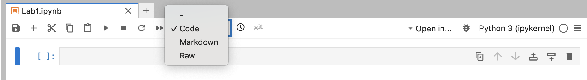

PSTAT 5A Lab 1
Introduction to Python and JupyterHub

Welcome to the first PSTAT 5A Lab! As we will soon learn, computers play an integral part in effectively and efficiently performing statistical analyses. The primary goal of these Labs is to develop the skills to communicate with computers and learn the basic principles and language of programming.
This first lab will introduce you to the JupyterHub environment, Python as a programming language, and some basic concepts of programming. You will also complete a series of tasks to familiarize yourself with the tools and concepts we will use throughout the course.
This lab is designed to be completed during your first lab section of the week, and it will set the foundation for the rest of the course. Make sure to read through all the material carefully, as it will be essential for your success in PSTAT 5A.
Structure of Labs
Every week we (the course staff) will publish a lab document, which is intended to be completed during your Lab Section (i.e., your first Section) of the week. Each lab document will consist of a combination of text, tips, and the occasional task for you to complete based on the text provided. Your TA will cover exactly what you need to turn in at the end of each lab in order to receive credit, but you should read all lab material carefully and thoroughly as content from labs will appear on quizzes and exams.
What Is Programming?
Computers, though incredibly useful, are fairly complex machines. To communicate with them, we need to use a specific language, known as a programming language. There are a number of programming languages currently in use—R, Julia, MatLab, and the language we will use for this course, Python.
Python programs can be written in many environments (e.g., text editors like VS Code or in a Terminal window). For this class we will use Jupyter Notebook (pronounced “Jew-pi-ter”), an interactive environment that’s hosted online so you don’t have to install anything to run Python code!
Getting Started
Navigate to https://pstat5a.lsit.ucsb.edu
- If you are using a personal computer, you may want to bookmark this page for easy access later.
Click Sign in with your UCSB NetID, and sign in.
Navigate to the Labs folder on the left-hand side of the JupyterHub interface.
Under Notebook, click Python 3 (ipykernel).
Congratulations, you have just made your first Jupyter notebook! Now, it’s time for our first task:
Task 1: Rename Your Notebook
- Find your new notebook in the left-hand file browser (it will be named
UntitledorUntitled1by default).
- Right-click the notebook and select → Rename.
- Rename it to
Lab1and hit Enter.
- Watch the title bar update to
Lab1.ipynb.
The JupyterHub Environment
Jupyter notebooks are built from cells—the shaded boxes you see on screen. Here’s how to work with them:
Cell Activation
- Inactive cell
- Appearance: light grey background
- Action: click anywhere inside the cell to activate
- Appearance: light grey background
- Active cell
- Appearance: colored border (green or blue)
- You can now type code or Markdown here.
- Appearance: colored border (green or blue)
Only the active cell runs when you press Run.
Running Cells
- Click the ▶️ Run button in the toolbar
- Or press Shift + Enter to run and advance to the next cell
Cell Types
You can switch any cell between Code and Markdown:
Code Cells
- Purpose: write and execute Python code
- Select:
- Click the cell
- Choose Code from the toolbar dropdown

- Click the cell
- Run: ▶️ Run button or Shift + Enter
Markdown Cells
- Purpose: write formatted text, headings, lists, math, and embed images
- Select:
- Click the cell
- Choose Markdown from the toolbar dropdown
- Click the cell
- Render: ▶️ Run button or Shift + Enter
Task 2: Markdown and Code Cells
Click into the initial cell (marked by
[ ]on the left).
In the toolbar dropdown (that currently says Code), select Markdown.
Copy-paste the following (including the
#):# Task 2Run the cell. You should see a large heading that says “Task 2”.
Add a new cell below (use the + button or menu).
Make sure the new cell is a Code cell.
Enter the following code and run it:
2 + 2
Expected Output:
4Task 3: Understanding Errors
Add a new Markdown cell with the heading:
# Task 3Add a new Code cell and enter the following (intentional error):
2 plus 2Run the cell. You should see an error message like:
Cell In[2], line 1
2 plus 2
^^^^
SyntaxError: invalid syntaxExplanation: - Python doesn’t understand plus as an operator - The ^^^^ points to where Python detected the problem - The error message tells us it’s a SyntaxError meaning invalid Python syntax - In Python, we must use + for addition, not the word plus
Correct the code to:
2 + 2 # This works correctlyRun the corrected cell. You should see:
4Task 4: Math in Python
In a new Code cell, compute the following:
\(\frac{2 + 3}{4 + 5^6}\)
(2 + 3) / (4 + 5**6)Break it down step by step:
numerator = 2 + 3 print(f"Numerator: {numerator}") denominator = 4 + 5**6 print(f"Denominator: {denominator}") result = numerator / denominator print(f"Final result: {result}")
Expected Output:
Numerator: 5
Denominator: 15629
Final result: 0.00032002048131121975Try this one as well:
\((1 - 3 \cdot 4^5)^6\)
(1 - 3 * 4**5)**6Step by step:
inner_exponent = 4**5 print(f"4^5 = {inner_exponent}") multiplication = 3 * inner_exponent print(f"3 * 4^5 = {multiplication}") subtraction = 1 - multiplication print(f"1 - 3 * 4^5 = {subtraction}") final_result = subtraction**6 print(f"(1 - 3 * 4^5)^6 = {final_result}")
Expected Output:
4^5 = 1024
3 * 4^5 = 3072
1 - 3 * 4^5 = -3071
(1 - 3 * 4^5)^6 = 729071973630476174071Task 5: Importing Modules
In a new Code cell, try running:
sin(1)You should see:
NameError: name 'sin' is not definedTo fix this, import the math module:
from math import * sin(1)Expected Output:
0.8414709848078965Alternative ways to import and use
sin:# Method 1: Import specific function from math import sin print(sin(1)) # Method 2: Import entire module import math print(math.sin(1)) # Method 3: Import with alias import math as m print(m.sin(1))
Task 6: Case Sensitivity
Assign a value to a variable:
my_variable = 5Try printing with the wrong capitalization:
print(My_variable)You should see:
NameError: name 'My_variable' is not definedPrint with the correct capitalization:
print(my_variable)Output:
5Try these examples to see how Python treats variable names:
my_variable = 5 My_variable = 10 MY_VARIABLE = 15 my_Variable = 20 print(f"my_variable = {my_variable}") print(f"My_variable = {My_variable}") print(f"MY_VARIABLE = {MY_VARIABLE}") print(f"my_Variable = {my_Variable}")Output:
my_variable = 5 My_variable = 10 MY_VARIABLE = 15 my_Variable = 20
Task 7: Commenting Code
Add comments to your code from previous tasks. For example:
# Task 2: Basic arithmetic
2 + 2 # Adding two integers
# Task 4: Complex mathematical expression
# Calculate (2 + 3) / (4 + 5^6)
numerator = 2 + 3 # Sum of 2 and 3
denominator = 4 + 5**6 # 4 plus 5 to the 6th power
result = numerator / denominator # Final division
print(f"Result: {result}")
# Task 5: Import math module and use sin function
from math import * # Import all math functions
angle_in_radians = 1 # Input angle in radians
sine_value = sin(angle_in_radians) # Calculate sine
print(f"sin(1) = {sine_value}")
# Task 6: Variable assignment with proper naming
my_variable = 5 # Store the value 5 in my_variable
print(my_variable) # Display the value
"""
This is a multi-line comment.
It can span multiple lines and is useful
for longer explanations or documentation.
"""Good commenting practices: - Explain what the code does - Clarify complex calculations - Document variable purposes - Use both inline (#) and block (""") comments
Task 8: Data Types
Use the
type()function to check data types:print(type(1)) # Output: <class 'int'> print(type(1.1)) # Output: <class 'float'> print(type("hello")) # Output: <class 'str'>Try more examples:
print("Integer:", type(42)) print("Float:", type(3.14159)) print("String with single quotes:", type('Python')) print("String with double quotes:", type("Programming")) print("Boolean True:", type(True)) print("Boolean False:", type(False)) print("List:", type([1, 2, 3])) print("Tuple:", type((1, 2, 3))) print("Dictionary:", type({"key": "value"}))
Task 9: Variables and Calculations
Add a Markdown cell:
# Task 9Assign values to variables:
course = "PSTAT 5A" num_sections = 4 section_capacity = 25Update
num_sections:num_sections = num_sections + 1 print(f"Updated number of sections: {num_sections}") # Alternative: num_sections += 1 # Alternative: num_sections = 4 + 1Predict and test expressions:
print(type(course)) # Expected: <class 'str'> print(type(num_sections)) # Expected: <class 'int'> print(num_sections * section_capacity) # Expected: 125Calculate course capacity:
course_capacity = num_sections * section_capacity print(f"Course: {course}") print(f"Number of sections: {num_sections}") print(f"Capacity per section: {section_capacity}") print(f"Total course capacity: {course_capacity}")Complete solution with comments:
# Step 2: Initial variable assignments course = "PSTAT 5A" # Course name as string num_sections = 4 # Initial number of sections section_capacity = 25 # Maximum students per section # Step 3: A new section has been added num_sections = num_sections + 1 # Increment by 1, now equals 5 # Step 4: Testing expressions with predictions print("Testing type() function:") print(f"type(course) = {type(course)}") # Expected: <class 'str'> print(f"type(num_sections) = {type(num_sections)}") # Expected: <class 'int'> print(f"num_sections * section_capacity = {num_sections * section_capacity}") # Expected: 125 # Step 5: Calculate total course capacity course_capacity = num_sections * section_capacity # 5 × 25 = 125 print(f"\nFinal Results:") print(f"Course: {course}") print(f"Total sections: {num_sections}") print(f"Capacity per section: {section_capacity}") print(f"Total course capacity: {course_capacity} students")
Summary of Key Concepts Learned
- JupyterHub Environment: Creating and renaming notebooks, understanding cell types (Code vs Markdown), running cells, navigating the interface
- Python Basics: Arithmetic operations, order of operations, error reading
- Variables and Data Types: Assignment, case sensitivity, types,
type() - Modules and Imports: Import syntax, using functions, math module
- Comments and Documentation: Inline and block comments, purpose
- Programming Best Practices: Descriptive variable names, comments, incremental testing, reading errors, using variables
Next Steps
In Lab 2, you’ll learn about: - Python functions and how to create them - Data structures (lists, dictionaries) - Control flow (if statements, loops) - More advanced programming concepts
Great work completing Lab 1! You now have the foundation needed for statistical programming in Python.